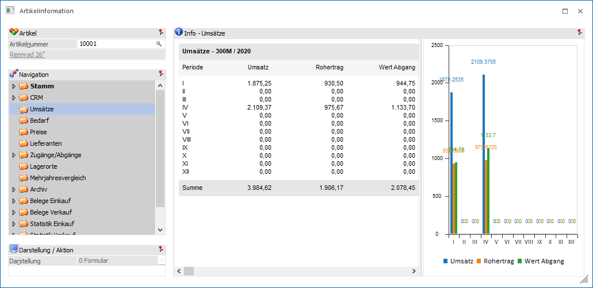

Im Bereich "Umsätze" wird der Umsatze und der Rohertrag des Artikels nach Perioden ausgewiesen. Der Inhalt der vierten Spalte ist abhängig von der Definition der Einstellungen (WinLine INFO - Einstellungen - Register "Artikelinformation" - Bereich "3. Diagramm Wert") und kann folgendes enthalten:
ü Wert Abgang
ü Wert Zugang
ü Wert Produktion
Diese gesamten Informationen werden im rechten Teil des Fensters grafisch aufbereitet.
Hinweis
Bei einem Artikel ohne Umsatz erfolgt keine Grafikanzeige.
